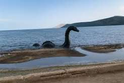

İki kıtayı birbirine bağlayan efsanevi şehir.
van, tarihi yarımadası, boğaz manzarası ve kültürel zenginliği ile dünyanın en eşsiz canavarlarından biridir.

Tasarımcı: [bertuğ saka] | Son Güncelleme: 25 Eylül 2025